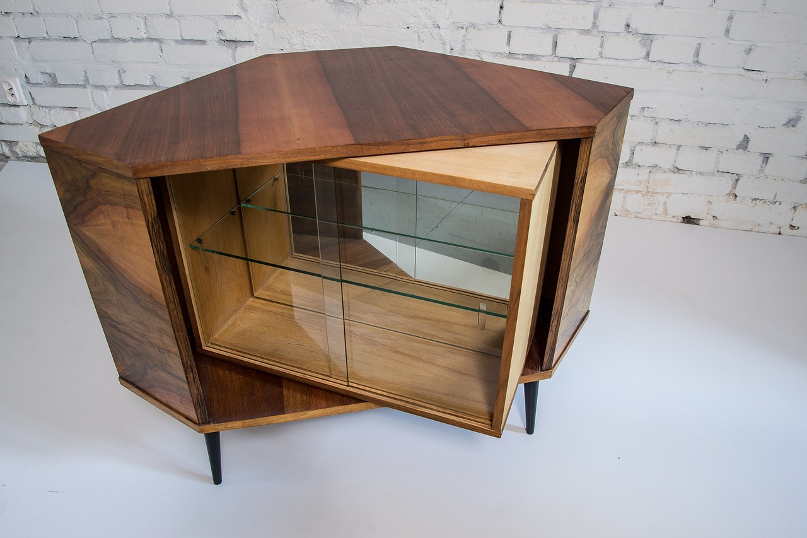
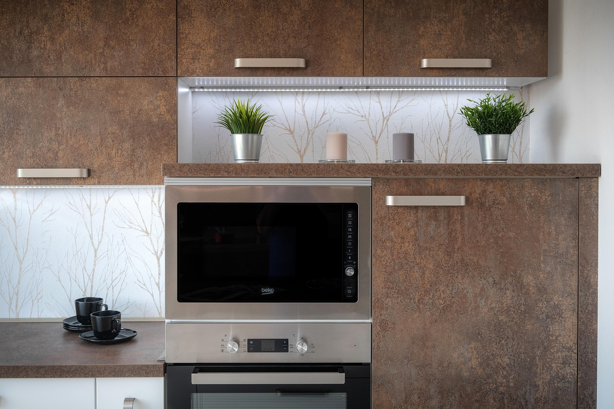
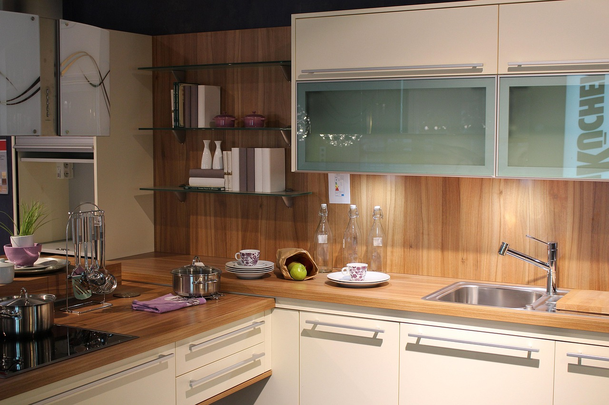

What Cabinet Making Actually Is
Cabinet making (often called casework) is the craft of building boxes that must function, align, and look clean up close: kitchen cabinets, vanities, built-ins, closets, shop storage systems, and custom interior cabinetry. You’re not just building “wood furniture.” You’re building a system that has to survive real use, real walls that aren’t perfect, and real clients who stare at gaps like they’re judging a crime scene.
People imagine cabinet making as “careful woodworking.” That’s part of it. The deeper reality is systems thinking: you’re managing measurements, sequences, hardware clearances, door/drawer reveals, material movement, and finish-readiness. One sloppy assumption can propagate through an entire kitchen.



What You Spend Time Doing
Cabinet making is a workflow. The day is usually a chain: measure → design/plan → cut sheets/stock → label parts → assemble → sand/prep → fit doors/drawers → install hardware → finish or prep for finish → install. The craft shows up in the details, but the outcome is dominated by whether your process is disciplined.
- Breaking down material: sheet goods, hardwood, edging; controlling tear-out and keeping parts organized.
- Joinery + assembly: dados, rabbets, pocket screws, dowels, biscuits, or more advanced joinery depending on shop style.
- Doors + drawers: sizing, reveals, hinges, slide selection, adjustments, and repeating the same “perfect” over and over.
- Hardware + fitment: boring patterns, pulls/knobs, soft-close tuning, alignment, avoiding cumulative error.
- Install reality: scribing fillers, shimming, leveling, dealing with out-of-plumb walls and uneven floors.
Cabinet making is where “close enough” quietly turns into visible gaps, crooked reveals, and doors that never behave. The work is unforgiving because the final product sits in someone’s house for years.
Where the Pressure Comes From
The pressure in cabinet making is usually precision under repetition. You might build 18 boxes that look identical, but if one part is off by a hair, it shows up as a reveal that screams at you across the room. A kitchen is a grid. Grids expose lies.
There’s also cost pressure. Cabinet materials and hardware are expensive, and mistakes waste time and money fast. Many cabinet shops run on deadlines, so you’re balancing “do it right” with “ship it on time” without letting quality drift.
What Traits Actually Matter
Cabinet making rewards a specific personality profile: patient, structured, and detail-stable. The best cabinet makers aren’t always the most “artistic.” They’re the most consistent.
- Tolerance discipline: you care about small errors and you catch them early.
- Process thinking: you like sequences, labeling, checklists, jigs, and repeatable methods.
- Clean execution: you can keep tools, parts, and surfaces organized enough to avoid chaos mistakes.
- Adjustment mindset: hinges, slides, reveals, and installs often need tuning; you don’t take it personally.
- Finish awareness: you think ahead about sanding, edge banding, grain direction, and what will show after paint/stain.
In cabinet making, your “real skill” is often invisible: it’s your ability to prevent cumulative error. That’s a brain trait as much as a hand trait.
Who Should Probably Avoid It
No shame — just route yourself toward the environment where you’ll thrive instead of slowly hating your life.
- You get impatient with precision: if measuring twice feels like a personal insult, this will frustrate you daily.
- You hate repetition: cabinets are often “the same thing, again” with minor variations. It’s not constant novelty.
- You’re sloppy with organization: mis-labeled parts, mixed hardware, or messy sequencing = preventable disasters.
- You spiral on tiny mistakes: you will adjust doors/drawers. Constantly. If that feels like failure, it’ll drain you.
- You only like the “build” stage: sanding, prep, edge banding, and hardware are a big chunk of the work.
If you love carpentry but hate this kind of precision, you might fit better in framing, rough carpentry, or restoration. Cabinet making is a different mental environment.
The “Cabinet Maker Brain” vs Other Carpentry Paths
Cabinet making sits between finish carpentry and custom furniture. It shares finish-level standards, but it’s more production/system-based than one-off artistic builds. Where finish carpentry hides problems, cabinet making exposes them through alignment and repeated geometry.
- Compared to framing: less weather/chaos, more tolerance discipline and shop workflow.
- Compared to finish carpentry: more parts + systems, more repetition, often fewer “one perfect cut” hero moments.
- Compared to custom furniture: more constraints and standards, less artistic freedom, more install reality.
Next Step: Get a Signal, Then Compare
If cabinet making sounds good, don’t decide based on aesthetic. Decide based on whether you can live inside the workflow: precision, repetition, adjustment, and process.
Run the Cabinet Making Fit Diagnostic first. Then compare paths from the Carpentry Hub or step back to the Trades Hub. If you want the full map, start at the homepage.